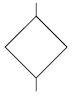
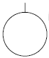
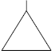
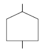
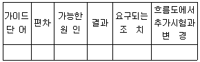
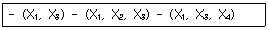
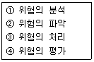
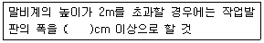

건설안전산업기사 (2013-06-02 기출문제)
1과목: 산업안전관리론
1. 다음 중 산업안전보건법령상 안전검사 대상 유해ㆍ위험 기계가 아닌 것은?
- 선반
- 리프트
- 압력용기
- 곤돌라
(정답률: 73%)

2. 하인리히의 재해손실비용 평가방식에서 총재해손실비용을 직접비와 간접비로 구분하였을 때 그 비율로 옳은 것은? (단, 순서는 직접비 : 간접비 이다.)
- 1 : 4
- 4 : 1
- 3 : 2
- 2 : 3
(정답률: 77%)
3. 다음 중 보호구 의무안전인증기준에 있어 방독마스크에 관한 용어의 설명으로 틀린 것은?
- “파과”란 대응하는 가스에 대하여 정화통 내부의 흡착제가 포화상태가 되어 흡착능력을 상실한 상태를 말한다.
- “파과곡선”이란 파과시간과 유해물질의 종류에 대한 관계를 나타낸 곡선을 말한다.
- “겸용 방독마스크”란 방독마스크(복합용 포함)의 성능에 방진마스크의 성능이 포함된 방독마스크를 말한다.
- “전면형 방독마스크”란 유해물질 등으로부터 안면부 전체(입, 코, 눈)를 덮을 수 있는 구조의 방독마스크를 말한다.
(정답률: 62%)
4. 인간의 착각현상 중 버스나 전동차의 움직임으로 인하여 자신이 승차하고 있는 정지된 자가용이 움직이는 것 같은 느낌을 받거나 구름 사이의 달 관찰시 구름이 움직일 때 구름은 정지되어 있고, 달이 움직이는 것처럼 느껴지는 현상을 무엇이라 하는가?
- 자동운동
- 유도운동
- 가현운동
- 플리커현상
(정답률: 73%)
5. 다음 중 “학습지도의 원리”에서 학습자가 지니고 있는 각자의 요구와 능력 등에 알맞은 학습활동의 기회를 마련해 주어야 한다는 원리는?
- 자기활동의 원리
- 개별화의 원리
- 사회화의 원리
- 통합의 원리
(정답률: 65%)
6. 다음 중 테크니컬 스킬즈(technical skills)에 관한 설명으로 옳은 것은?
- 모럴(morale)을 앙양시키는 능력
- 인간을 사물에게 적응시키는 능력
- 사물을 인간에게 유리하게 처리하는 능력
- 인간과 인간의 의사소통을 원활히 처리하는 능력
(정답률: 70%)
7. 다음 중 산업안전보건법령상 안전ㆍ보건표지에 있어 경고 표지의 종류에 해당하지 않는 것은?
- 방사성물질 경고
- 급성독성물질 경고
- 차량통행 경고
- 레이저광선 경고
(정답률: 73%)
8. 다음 중 연간 총근로시간 합계 100만 시간당 재해발생 건수를 나타내는 재해율은?
- 연천인율
- 도수율
- 강도율
- 종합재해지수
(정답률: 65%)
9. 다음 중 피로의 직접적인 원인과 가장 거리가 먼 것은?
- 작업 환경
- 작업 속도
- 작업 태도
- 작업 적성
(정답률: 63%)
10. 다음 중 인간의 욕구를 5단계로 구분한 이론을 발표한 사람은?
- 허츠버그(Herzberg)
- 하인리히(Heinrich)
- 매슬로우(Maslow)
- 맥그리거(McGregor)
(정답률: 78%)
11. 다음 중 STOP 기법의 설명으로 옳은 것은?
- 교육훈련의 평가방법으로 활용된다.
- 일용직 근로자의 안전교육 추진방법이다.
- 경영층의 대표적인 위험예지 훈련방법이다.
- 관리감독자의 안전관찰 훈련으로 현장에서 주로 실시한다.
(정답률: 57%)
12. 안전교육의 방법 중 프로그램 학습법(programmed self - instruction method)에 관한 설명으로 틀린 것은?
- 개발비가 적게 들어 쉽게 적용할 수 있다.
- 수업의 모든 단계에서 적용이 가능하다.
- 한 번 개발된 프로그램 자료는 개조하기 어렵다.
- 수강자들이 학습이 가능한 시간대의 폭이 넓다.
(정답률: 57%)
13. 모랄 서베이(Morale survey)의 주요 방법 중 태도 조사법에 해당하는 것은?
- 사례연구법
- 관찰법
- 실험연구법
- 문답법
(정답률: 60%)
14. 다음 중 무재해 운동의 기본 이념 3원칙과 거리가 먼 것은?
- 무의 원칙
- 자주활동의 원칙
- 참가의 원칙
- 선취 해결의 원칙
(정답률: 66%)
15. 인간의 안전교육 형태에서 행위나 난이도가 점차적으로 높아지는 순서를 옳게 표시한 것은?
- 지식 → 태도변형 → 개인행위 → 집단행위
- 태도변형 → 지식 → 집단행위 → 개인행위
- 개인행위 → 태도변형 → 집단행위 → 지식
- 개인행위 → 집단행위 → 지식 → 태도변형
(정답률: 73%)
16. 버드(Bird)의 재해발생 비율에서 물적손해 만의 사고가 120건 발생하면 상해도 손해도 없는 사고는 몇 건 정도 발생하겠는가?
- 600건
- 1200건
- 1800건
- 2400건
(정답률: 44%)
17. 다음 중 상해 종류에 대한 설명으로 옳은 것은?
- 찰과상 : 창, 칼 등에 베인 상해
- 창상 : 스치거나 문질러서 피부가 벗겨진 상해
- 자상 : 칼날 등 날카로운 물건에 찔린 상해
- 좌상 : 국부의 혈액순환의 이상으로 몸이 퉁퉁 부어 오르는 상해
(정답률: 73%)
18. 다음 중 안전교육의 단계에 있어 안전한 마음가짐을 몸에 익히는 심리적인 교육방법을 무엇이라 하는가?
- 지식교육
- 실습교육
- 태도교육
- 기능교육
(정답률: 75%)
19. 다음 중 산업안전보건법령상 사업 내 안전ㆍ보건교육의 교육과정에 해당하지 않는 것은?
- 검사원 정기점검교육
- 특별안전ㆍ보건교육
- 근로자 정기안전ㆍ보건교육
- 작업내용 변경 시의 교육
(정답률: 74%)
20. 다음 중 산업안전보건법령상 안전보건 총괄책임자 지정 대상사업으로 상시근로자 50명 이상 사업의 종류에 해당하는 것은?
- 서적, 잡지 및 기타 인쇄물 출판업
- 음악 및 기타 오디오물 출판업
- 금속 및 비금속 원료 재생업
- 선박 및 보트 건조업
(정답률: 58%)
2과목: 인간공학 및 시스템안전공학
21. FT도에 사용되는 기호 중 통상사상을 나타낸 것은?




(정답률: 67%)
22. 다음 중 한 자극 차원에서의 절대 식별 수에 있어 순음의 경우 평균 식별 수는 어느 정도 되는가?
- 1
- 5
- 9
- 13
(정답률: 57%)
23. 다음 중 소음의 크기에 대한 설명으로 틀린 것은?
- 저주파 음은 고주파 음만큼 크게 들리지 않는다.
- 사람의 귀는 모든 주파수의 음에 동일하게 반응한다.
- 크기가 같아지려면 저주파 음은 고주파 음보다 강해야 한다.
- 일반적으로 낮은 주파수(100Hz 이하)에 덜 민감하고, 높은 주파수에 더 민감하다.
(정답률: 74%)
24. 다음 중 시력 및 조명에 관한 설명으로 옳은 것은?
- 표적 물체가 움직이거나 관측자가 움직이면 시력의 역치는 증가한다.
- 필터를 부착한 VDT화면에 표시된 글자의 밝기는 줄어 들지만 대비는 증가한다.
- 대비는 표적 물체 표면에 도달하는 조도와 결과하는 광도와의 차이를 나타낸다.
- 관측자의 시야 내에 있는 주시영역과 그 주변 영역의 조도의 비를 조도비라고 한다.
(정답률: 47%)
25. 다음 중 통제기기의 변위를 20mm 움직였을 때 표시기기의 지침이 25mm 움직였다면 이 기기의 C/R비는 얼마인가?
- 0.3
- 0.4
- 0.8
- 0.9
(정답률: 67%)
26. 다음 중 제조나 생산과정에서의 품질관리 미비로 생기는 고장으로, 점검작업이나 시운전으로 예방할 수 있는 고장은?
- 초기고장
- 마모고장
- 우발고장
- 평상고장
(정답률: 67%)
27. 인간계측자료를 응용하여 제품을 설계하고자 할 때 다음 중 제품과 적용기준으로 가장 적절하지 않은 것은?
- 출입문 - 최대 집단치 설계기준
- 안내 데스크 - 평균치 설계기준
- 선반 높이 - 최대 집단치 설계기준
- 공구 - 평균치 설계기준
(정답률: 73%)
28. 다음 중 인간-기계시스템의 설계 단계를 6단계로 구분 할 때 제3단계인 기본설계단계에 속하지 않는 것은?
- 직무 분석
- 기능의 할당
- 인터페이스 설계
- 인간 성능 요건 명세
(정답률: 45%)
29. 다음은 위험분석기법 중 어떠한 기법에 사용되는 양식인가?

- ETA
- THERP
- FMEA
- HAZOP
(정답률: 47%)
30. 작업종료 후에도 체내에 쌓인 젖산을 제거하기 위하여 추가로 요구되는 산소량을 무엇이라 하는가?
- ATP
- 에너지대사율
- 산소 빚
- 산소최대섭취능
(정답률: 63%)
31. 부품 배치의 원칙 중 부품의 일반적인 위치를 결정하기 위한 기준으로 가장 적합한 것은?
- 중요성의 원칙, 사용 빈도의 원칙
- 기능별 배치의 원칙, 사용 순서의 원칙
- 중요성의 원칙, 사용 순서의 원칙
- 사용 빈도의 원칙, 사용 순서의 원칙
(정답률: 61%)
32. FT도에 의한 컷셋(cut sets)이 다음과 같이 구해졌을 때 최소 컷셋(minimal cut set)으로 옳은 것은?

- (X1, X3)
- (X1, X2, X3)
- (X1, X3, X4)
- (X1, X2, X3, X4)
(정답률: 62%)
33. 인지 및 인식의 오류를 예방하기 위해 목표와 관련하여 작동을 계획해야 하는데 특수하고 친숙하지 않은 상황에서 발생하며, 부적절한 분석이나 의사결정을 잘못하여 발생하는 오류는?
- 기능에 기초한 행동(Skill-based Behavior)
- 규칙에 기초한 행동(Rule-based Behavior)
- 지식에 기초한 행동(Knowledge-based Behavior)
- 사고에 기초한 행동(Accident-based Behavior)
(정답률: 56%)
34. 다음 중 FTA의 기대효과로 볼 수 없는 것은?
- 사고 원인 규명의 간편화
- 사고 원인분석의 정량화
- 시스템의 결함 진단
- 사고 결과의 분석
(정답률: 39%)
35. [보기]와 같은 위험관리의 단계를 순서대로 올바르게 나열한 것은?

- ① → ② → ④ → ③
- ② → ③ → ① → ④
- ① → ③ → ② → ④
- ② → ① → ④ → ③
(정답률: 65%)
36. 다음 중 광도(luminous intensity)의 단위에 해당하는 것은?
- cd
- fc
- nit
- lux
(정답률: 54%)
37. 건구온도 38℃, 습구온도 32℃ 일 때의 Oxford 지수는 몇 ℃ 인가?
- 30.2℃
- 32.9℃
- 35.0℃
- 37.1℃
(정답률: 51%)
38. 시스템의 수명주기를 구상, 정의, 개발, 생산, 운전의 5단계로 구분할 때 다음 중 시스템 안전성 위험분석(SSHA)은 어느 단계에서 수행되는 것이 가장 적합한가?
- 구상(concept) 단계
- 운전(deployment) 단계
- 생산(production) 단계
- 정의(definition) 단계
(정답률: 41%)
39. 다음 중 인간공학의 직접적인 목적과 가장 거리가 먼 것은?
- 기계조작의 능률성
- 인간의 능력개발
- 사고의 미연 및 방지
- 작업환경의 쾌적성
(정답률: 52%)
40. 통신에서 잡음 중의 일부를 제거하기 위해 필터(filter)를 사용하였다면 이는 다음 중 어느 것의 성능을 향상 시키는 것인가?
- 신호의 검출성
- 신호의 양립성
- 신호의 산란성
- 신호의 표준성
(정답률: 66%)
3과목: 건설시공학
41. 철근이음공법 중 지름이 큰 철근을 이음할 경우 철근의 재료를 절감하기 위하여 활용하는 공법이 아닌 것은?
- 가스압접이음
- 맞댄용접이음
- 나사식커플링이음
- 겹친이음
(정답률: 77%)
42. 연약지반 개량공법 중 동결공법의 특징이 아닌 것은?
- 동토의 역학적 강도가 우수하다.
- 지하수 오염과 같은 공해 우려가 있다.
- 동토의 차수성과 부착력이 크다.
- 동토형성에는 일정 기간이 필요하다.
(정답률: 62%)
43. 철골부재 용접시 발생하는 용접결함이 아닌 것은?
- 위핑(weeping)
- 슬래그(slag)감싸들기
- 오버랩(over lap)
- 공기구멍(blow hole)
(정답률: 74%)
44. 기초보강공사 중 언더피닝(Under Pinning)공법으로 보강해야 할 경우가 아닌 것은?
- 기존건물에 근접하여 구조물을 구축할 경우
- 기존건물에 파일머리보다 깊은 구조물을 건설할 경우
- 지하수면의 이동이 발생하거나 파일두부가 파손되어 지층내력이 약화된 경우
- 기존건물의 기초가 침하하여 보나 기둥을 보강할 경우
(정답률: 42%)
45. 일정한 지속하중에 있는 콘크리트가 하중은 변함이 없는데도 불구하고 시간이 경과하면서 변형이 점차 증가하는 현상은?
- 그리프 현상
- 블리딩 현상
- 중성화 현상
- 레이턴스 현상
(정답률: 63%)
46. 네트워크 공정표의 특성에 관한 설명 중 옳지 않은 것은?
- 개개의 작업 관련이 도시되어 있어 프로젝트 전체 및 부분파악이 쉽다.
- 작업순서 관계가 명확하여 공사담당자간의 정보전달이 원활하다.
- 네트워크 기법의 표시상 제약으로 작업의 세분화 정도에는 한계가 있다.
- 공정표가 단순하여 경험이 적은 사람도 작성 및 검사하기가 쉽다.
(정답률: 73%)
47. 설계ㆍ시공 일괄계약제도에 대한 설명 중 옳지 않은 것은?
- 단계별 시공의 적용으로 전체 공사기간의 단축이 가능 하다.
- 설계와 시공의 책임 소재가 일원화된다.
- 발주자의 의도가 충분히 반영될 수 있다.
- 계약 체결시 총비용이 결정되지 않으므로 공사비용이 상승할 우려가 있다.
(정답률: 69%)
48. 공사 시방서에 기재되어야 할 사항으로 옳지 않은 것은?
- 사용재료의 품질시험방법
- 시공방법 및 시공정밀도
- 공사계약 조건 및 공종별 시공순서
- 시방서의 적용범위 및 사전준비 사항
(정답률: 37%)
49. 콘크리트 부재에 균열이 생길만한 곳에 미리 줄눈을 설치하고, 그 결함부위로 균열이 집중적으로 생기게 하여 다른 부분의 균열을 방지하는 줄눈은?
- 신축줄눈
- 시공줄눈
- 조절줄눈
- 침하줄눈
(정답률: 57%)
50. Top down 공법에 대한 설명으로 옳지 않은 것은?
- 지하층과 지상층을 동시작업하므로 공기가 단축된다.
- 완전역타, 부분역타, 보 및 거더식 역타공법 등이 있다.
- 설계변경은 언제나 가능하고, 급배기 환기시설 등이 불필요하다.
- 도심지 공사에서 1층 작업장을 활용하고자 할 때 적용한다.
(정답률: 76%)
51. 콘크리트 공사에서 비교적 간단한 구조의 합판거푸집을 적용할 때 사용되며 측압력을 부담하지 않고 단지 거푸집의 간격만 유지시켜 주는 역할을 하는 것은?
- 컬럼밴드
- 턴버클
- 폼타이
- 세퍼레이터
(정답률: 67%)
52. 지중보의 역할에 대한 설명으로 옳은 것은?
- 흙의 허용 지내력도를 크게 한다.
- 주각을 서로 연결시켜 고정상태로 하여 부동침하를 방지한다.
- 지반을 압밀하여 지반강도를 증가시킨다.
- 콘크리트의 허용 지내력도를 크게 한다.
(정답률: 72%)
53. 현장개설 후 자재수급 계획시 필요조건이 아닌 것은?
- 자재 명세서
- 납입 계획서
- 발주ㆍ구입시기
- 세금계산서
(정답률: 80%)
54. 현장에서 철근공사와 관련된 사항으로 옳지 않은 것은?
- 철근공사 착공 전 구조도면과 구조계산서를 대조하는 확인작업 수행
- 도면오류를 파악한 후 정정을 요구하거나 철근상세도를 구조평면도에 표시하여 승인 후 시공
- 품질이 규격값 이하이거나 6% 이상의 단면결손 철근의 사용배제
- 구부러진 철근을 다시 펴는 가공작업을 거친 후 재사용
(정답률: 87%)
55. 콘크리트 타설에 있어서 다지거나 진동을 주는 목적으로 옳은 것은?
- 콘크리트 점도를 증진시켜 준다.
- 시멘트를 절약시킨다.
- 동결을 방지하고 경화를 촉진시킨다.
- 콘크리트를 거푸집 구석구석까지 충전시킨다.
(정답률: 78%)
56. 인접건축물의 벽체나 슬래브 바닥에 설치하여 구조물의 변형상태를 측정하는 장비는?
- Water level meter
- Load cell
- Piezo meter
- Tilt meter
(정답률: 54%)
57. Net work 공정표에서 결합점이 가지는 여유시간을 무엇이라 하는가?
- 액티비티(Activity)
- 더미(Dummy)
- 패스(Path)
- 슬랙(Slack)
(정답률: 70%)
58. 표준관입시험은 63.5kg의 추를 76cm 높이에서 자유낙하시켜 샘플러가 일정 깊이까지 관입하는데 소요되는 타격회수(N)로 시험하는데 그 깊이로 옳은 것은?
- 15cm
- 30cm
- 45cm
- 60cm
(정답률: 81%)
59. AE콘크리트에 관한 설명 중 옳은 것은?
- 공기량이 많을수록 slump는 증가한다.
- 공기량이 1% 증가함에 따라 콘크리트의 압축강도는 다소 증가한다.
- 동일 slump를 얻기 위해서 AE콘크리트는 사용수량이 증가한다.
- 적당량의 AE제를 사용하면 동결융해 저항성이 다소 감소한다.
(정답률: 51%)
60. 흙막이벽 설계시 고려하지 않아도 되는 것은?
- 히빙(heaving)
- 보일링(boiling)
- 파이핑(piping)
- 사운딩(sounding)
(정답률: 81%)
4과목: 건설재료학
61. 콘크리트 혼화제 중 AE제를 사용하는 목적과 가장 거리가 먼 것은?
- 동결 융해에 대한 저항성 개선
- 단위수량 감소
- 워커빌리티 향상
- 철근과의 부착강도 증대
(정답률: 66%)
62. 콘크리트의 중성화 시험을 위해 사용하는 것은?
- 질산은 용액
- 황산나트륨 용액
- 페놀프탈레인 용액
- 탄산나트륨 용액
(정답률: 53%)
63. 테라조의 종석으로 가장 적당한 것은?
- 대리석
- 현무암
- 감람석
- 진주암
(정답률: 65%)
64. KS F 2527에 규정된 콘크리트용 부순 굵은 골재의 물리적 성질을 알기 위한 시험항목 중 흡수율의 기준은?
- 1% 이하
- 3% 이하
- 5% 이하
- 10% 이하
(정답률: 61%)
65. 콘크리트에서 볼 수 있는 레이턴스(laitance) 현상의 피해로 대표적인 것은?
- 콘크리트의 수축균열현상이 심화된다.
- 콘크리트의 응결ㆍ경화가 지연된다.
- 경화 콘크리트 내부에 공극이 발생한다.
- 연속되는 콘크리트와의 부착력이 떨어진다.
(정답률: 59%)
66. 다음 중 알루미늄에 관한 설명으로 옳지 않은 것은?
- 250 ~ 300℃에서 풀림한 것은 콘크리트 등의 알칼리에 침식되지 않는다.
- 비중은 철의 1/3 정도이다.
- 전연성이 좋고 내식성이 우수하다.
- 온도가 상승함에 따라 인장강도가 급격히 감소하고 600℃에 거의 0 이된다.
(정답률: 75%)
67. 도장공사에 사용되는 초벌도료에 대한 설명으로 옳지 않은 것은?
- 도장면과의 부착성을 높이고 재벌, 정벌 칠하기 작업이 원활하도록 만드는 것이 초벌도료이다.
- 철재면 초벌도료는 방청도료이다.
- 콘크리트, 모르타르 벽면에는 유성페인트로 초벌칠을 한다.
- 목재면의 초벌도료는 목재면의 흡수성을 막고, 부착성을 증진시키고, 아울러 수액이나 송진 등의 침출을 방지한다.
(정답률: 67%)
68. 화성암에 속하며 질이 단단하고 내구성 및 압축강도가 크며, 흡수성이 적어 건축물의 내외장재로 많이 사용되는 석재는?
- 사문암
- 화강암
- 사암
- 석회암
(정답률: 73%)
69. 목재의 결점에 해당되지 않는 것은?
- 옹이
- 지선
- 입피
- 소편
(정답률: 52%)
70. 보통 포틀랜드시멘트와 비교한 고로시멘트의 특징으로 옳지 않은 것은?
- 장기강도가 크다.
- 해수나 하수 등에 대한 저항성이 우수하다.
- 미분말로서 초기강도 발현이 용이하다.
- 초기 수화열이 낮다.
(정답률: 55%)
71. 철골부재로 쓰이는 형강은 주로 어떤 방법으로 제조하는가?
- 인발법
- 단조법
- 주조법
- 압연법
(정답률: 60%)
72. 목재에 관한 설명 중 옳지 않은 것은?
- 목질부 중 수심 부근에 있는 부분을 심재라고 한다.
- 다른 재료에 비해 비강도가 큰 편이다.
- 목재를 직사광선에서 건조시키는 것은 바람직하지 않다.
- 목재의 압축 및 인장강도는 섬유방향에 평행인 경우보다 직각인 경우가 더 크다.
(정답률: 65%)
73. 표준형 점토벽돌의 치수로 옳은 것은?
- 210×90×57 mm
- 210×110×60 mm
- 190×100×60 mm
- 190×90×57 mm
(정답률: 66%)
74. 단열재료의 성질에 관한 설명 중 옳은 것은?
- 열전도율이 높을수록 단열 성능이 크다.
- 같은 두께인 경우 경량재료가 단열에 더 효과적이다.
- 단열재는 밀도가 다르더라도 단열성능은 같다.
- 대부분 단열재는 흡음성이 떨어진다.
(정답률: 64%)
75. 콘크리트의 수화속도에 영향을 미치는 인자가 아닌 것은?
- 혼화재료
- 물시멘트비
- 양생온도
- 사용자갈의 크기
(정답률: 76%)
76. 합성수지에 대한 설명 중 옳지 않은 것은?
- 페놀수지는 내열성ㆍ내수성이 양호하여 파이프, 덕트등에 사용된다.
- 염화비닐수지는 열가소성 수지에 속한다.
- 실리콘수지는 전기적 성능은 우수하나 내약품성ㆍ내후성이 좋지 않다.
- 에폭시수지는 내약품성이 양호하며 금속도료 및 접착제로 쓰인다.
(정답률: 67%)
77. 도장재료의 주요 구성요소 중 도막에 색을 주거나 기계적인 성질을 보강하는 역할의 불용성 요소는?
- 안료
- 전색제
- AE제
- 용제
(정답률: 66%)
78. 합성수지와 체질 안료를 혼합한 입체 무늬 모양을 내는 뿜칠용 도료로서 콘크리트나 모르타르 바탕에 도장하는 도료는?
- 래커
- 캐슈
- 오일 서페이서
- 본타일
(정답률: 42%)
79. 규산칼슘판 단열재에 대한 설명으로 옳은 것은?
- 용융유리를 흡착법 등으로 수㎛의 가는 섬유로 만든 것
- 각종 슬래그에 석회암을 첨가하여 가는 섬유형태로 만든 것
- 주원료인 식물섬유를 쪄서 분해한 밀도 0.4미만인 것
- 내열성과 내파손성이 우수하여 철골내화피복으로 사용 되는 것
(정답률: 64%)
80. 굳지 않은 콘크리트의 성질 중 단위수량에 지배되는 묽기 정도를 나타내는 것으로 보통 슬럼프 값으로 표시되는 것은?
- 마감성(finishability)
- 반죽질기(consistency)
- 워커빌리티(workability)
- 플라스티시티(plasticity)
(정답률: 57%)
5과목: 건설안전기술
81. 건설현장에서 근로자가 안전하게 통행할 수 있도록 통로에 설치하는 조명의 조도 기준은?
- 65 lux
- 75 lux
- 85 lux
- 95 lux
(정답률: 77%)
82. 작업으로 인하여 물체가 떨어지거나 날아올 위험이 있는 경우에 조치 및 준수하여야 할 내용으로 옳지 않은 것은?
- 낙하물방지망, 수직보호망 또는 방호선반 등을 설치한다.
- 낙하물방지망의 내민 길이는 벽면으로부터 2m 이상으로 한다.
- 낙하물방지망의 수평면과 각도는 20° 이상 30° 이하를 유지한다.
- 낙하물방지망은 높이 15m 이내마다 설치한다.
(정답률: 61%)
83. 옹벽의 활동에 대한 저항력은 옹벽에 작용하는 수평력보다 최소 몇 배 이상 되어야 안전한가?
- 0.5
- 1.0
- 1.5
- 2.0
(정답률: 59%)
84. 콘크리트를 타설할 때 안전상 유의하여야 할 사항으로 옳지 않은 것은?
- 콘크리트를 치는 도중에는 거푸집, 지보공 등의 이상 유무를 확인한다.
- 진동기 사용시 지나친 진동은 거푸집 도괴의 원인이 될 수 있으므로 적절히 사용해야 한다.
- 최상부의 슬래브는 되도록 이어붓기를 하고 여러 번에 나누어 콘크리트를 타설한다.
- 타워에 연결되어 있는 슈트의 접속은 확실한지 확인한다.
(정답률: 73%)
85. 현장에서 말비계를 조립하여 사용할 때에는 다음 보기의 사항을 준수하여야 한다. ( )안에 적합한 것은?

- 10
- 20
- 30
- 40
(정답률: 68%)
86. 비탈면 붕괴 방지를 위한 붕괴방지공법과 가장 거리가 먼 것은?
- 배토공법
- 압성토공법
- 공작물의 설치
- 웰포인트 공법
(정답률: 57%)
87. 철근콘크리트 공사시 거푸집의 필요조건이 아닌 것은?
- 콘크리트의 하중에 대해 뒤틀림이 없는 강도를 갖출 것
- 콘크리트 내 수분 등에 대한 물빠짐이 원할한 구조를 갖출 것
- 최소한의 재료로 여러 번 사용할 수 있는 전용성을 가질 것
- 거푸집은 조립ㆍ해체ㆍ운반이 용이하도록 할 것
(정답률: 64%)
88. 건설업 산업안전보건관리비의 사용항목이 아닌 것은?
- 안전관리계획서 작성비용
- 안전관리자의 인건비
- 안전시설비
- 안전진단비
(정답률: 52%)
89. 트렌치 굴착시 흙막이 지보공을 설치하지 않는 경우 굴착 깊이는 몇 m 이하로 해야 하는가?
- 1.5m
- 2m
- 3.5m
- 4m
(정답률: 33%)
90. 산업안전보건기준에 관한 규칙에 따른 계단 및 계단참을 설치하는 경우 매 m2당 최소 얼마 이상의 하중에 견딜 수 있는 강도를 가진 구조로 설치하여야 하는가?
- 500 kg
- 600 kg
- 700 kg
- 800 kg
(정답률: 55%)
91. 근로자의 추락 등의 위험을 방지하기 위하여 설치하는 안전난간의 구조 및 설치 기준으로 옳지 않은 것은?
- 상부난간대는 바닥면ㆍ발판 또는 경사로의 표면으로부터 90cm 이상 지점에 설치할 것
- 발끝막이판은 바닥면 등으로부터 10cm 이상의 높이를 유지할 것
- 안전난간은 구조적으로 가장 취약한 지점에서 가장 취약한 방향으로 작용하는 80kg 이상의 하중에 견딜 수 있는 튼튼한 구조일 것
- 난간대는 지름 2.7cm 이상의 금속제 파이프나 그 이상의 강도가 있는 재료일 것
(정답률: 69%)
92. 사다리식 통로를 설치할 때 사다리의 상단은 걸쳐 놓은 지점으로부터 얼마 이상 올라가도록 하여야 하는가?
- 45cm 이상
- 60cm 이상
- 75cm 이상
- 90cm 이상
(정답률: 70%)
93. 차량계 하역운반기계 등을 이송하기 위하여 지주 또는 견인에 의하여 화물자동차에 싣거나 내리는 작업을 할 때에 준수하여야 할 사항으로 옳지 않은 것은?
- 발판을 사용하는 경우에는 충분한 길이ㆍ폭 및 강도를 가진 것을 사용할 것
- 지정운전자의 성명ㆍ연락처 등을 보기 쉬운 곳에 표시하고 지정운전자 외에는 운전하지 않도록 할 것
- 가설대 등을 사용하는 경우에는 충분한 폭 및 강도와 적당한 경사를 확보할 것
- 싣거나 내리는 작업을 할 때는 편의를 위해 경사지고 견고한 지대에서 할 것
(정답률: 73%)
94. 작업조건에 알맞은 보호구의 연결이 옳지 않은 것은? (문제 오류로 실제 시험에서는 모두 정답처리 되었습니다. 여기서는 1번을 누르면 정답 처리 됩니다.)
- 안전대 : 높이 또는 깊이 2m 이상의 추락할 위험이 있는 장소에서의 작업
- 보안면 : 물체가 흩날릴 위험이 있는 작업
- 안전화 : 물체의 낙하ㆍ충격, 물체에의 끼임, 감전 또는 정전기의 대전(帶電)에 의한 위험이 있는 작업
- 방열복 : 고열에 의한 화상 등의 위험이 있는 작업
(정답률: 66%)
95. 콘크리트 타설 작업시 거푸집에 작용하는 연직하중이 아닌 것은?
- 콘크리트의 측압
- 거푸집의 중량
- 굳지 않은 콘크리트의 중량
- 작업원의 작업하중
(정답률: 65%)
96. 점성토 지반의 개량공법으로 적합하지 않은 것은?
- 바이브로 플로테이션 공법
- 프리로딩 공법
- 치환공법
- 페이퍼 드레인공법
(정답률: 52%)
97. 철골작업에서 작업을 중지해야 하는 규정에 해당되지 않는 경우는?
- 풍속이 초당 10m 이상인 경우
- 강우량이 시간당 1mm 이상인 경우
- 강설량이 시간당 1cm 이상인 경우
- 겨울철 기온이 영하 4℃ 이상인 경우
(정답률: 76%)
98. 쇼벨계 굴착기에 부착하며, 유압을 이용하여 콘크리트의 파괴, 빌딩해체, 도로파괴 등에 쓰이는 것은?
- 파일 드라이버
- 디젤해머
- 브레이커
- 오우거
(정답률: 49%)
99. 모래질 지반에서 포화된 가는 모래에 충격을 가하면 모래가 약간 수축하여 정(+)의 공극수압이 발생하며, 이로 인하여 유효응력이 감소하여 전단강도가 떨어져 순간침하가 발생하는 현상은?
- 동상현상
- 연화현상
- 리칭현상
- 액상화현상
(정답률: 54%)
100. 유해ㆍ위험 방지계획서 제출시 첨부서류의 항목인 것은 어느 것인가?
- 기계・설비의 배치도면
- 건축물 각 층의 평면도
- 작업환경 조성계획
- 공사 개요 및 안전보건관리계획
(정답률: 41%)